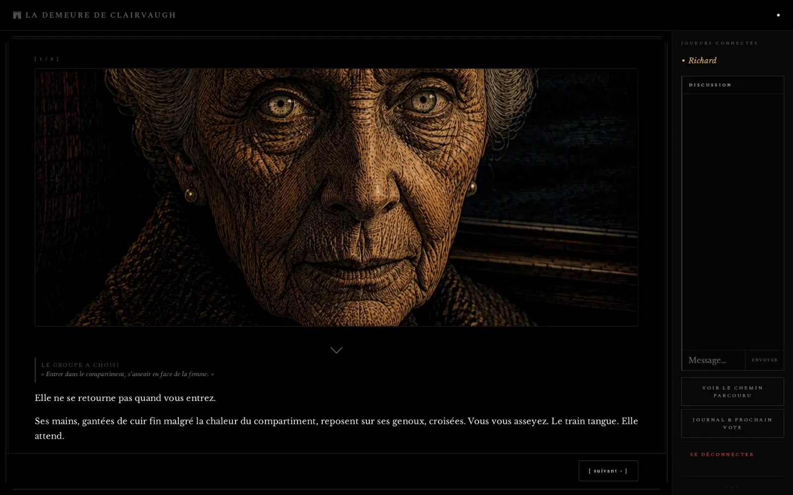
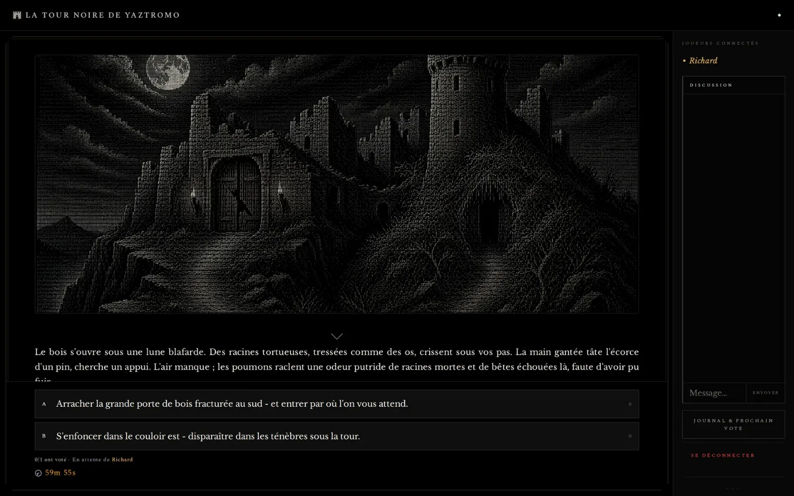
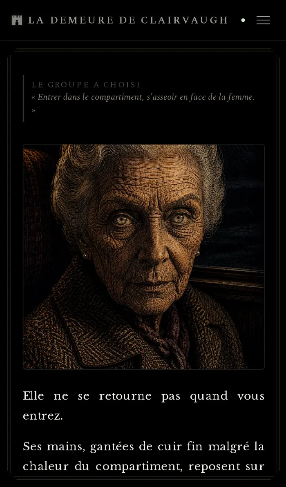
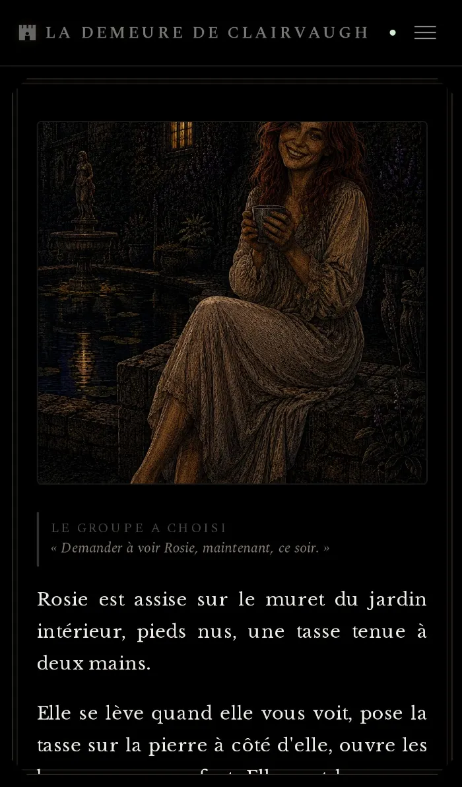
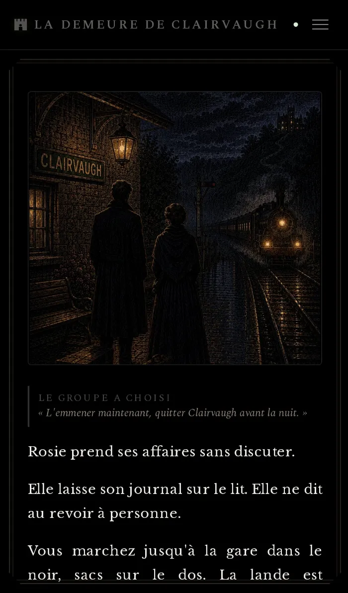
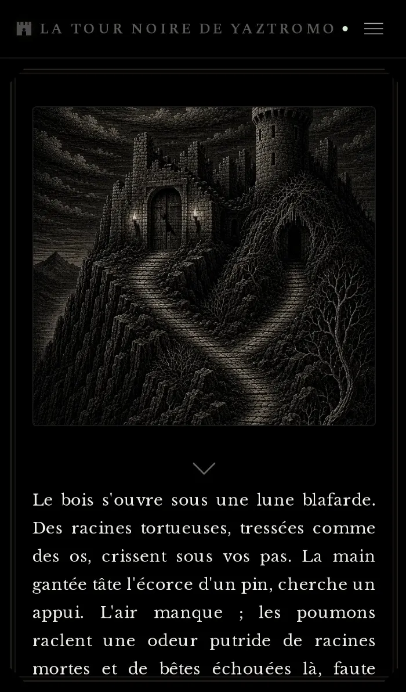
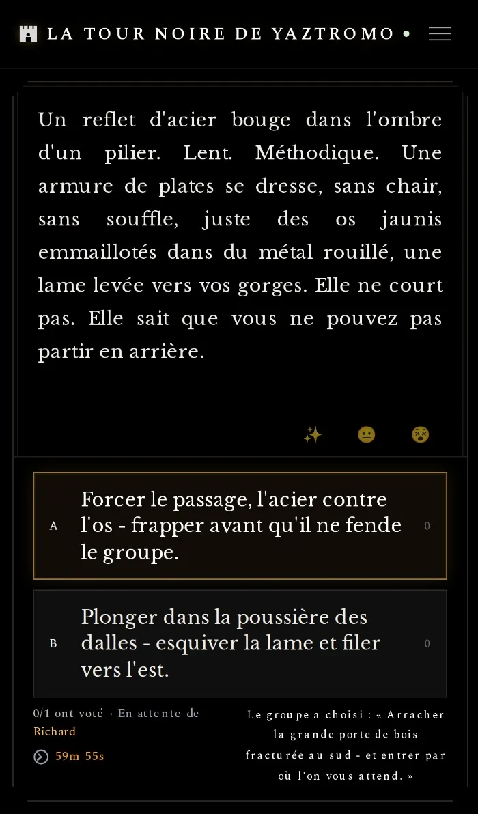
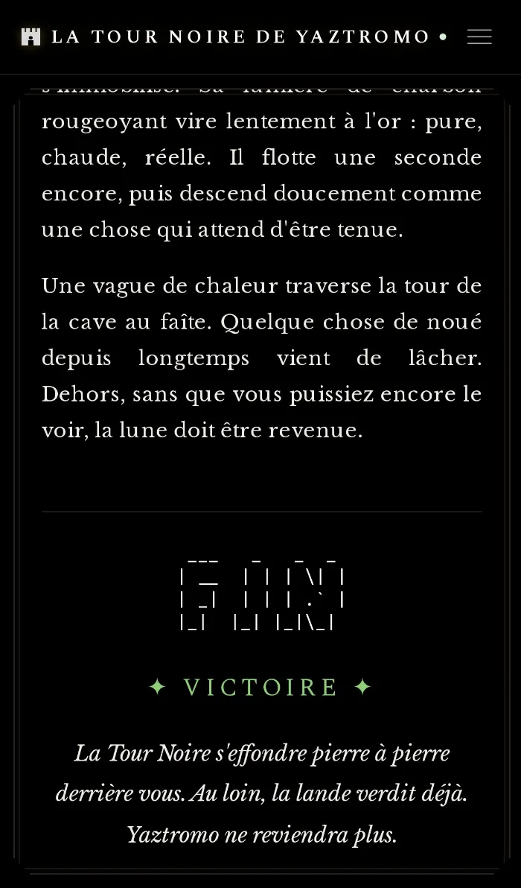

LDVELH
Un livre dont vous êtes le héros qui se joue à plusieurs, chacun à son rythme. Le groupe vote à chaque embranchement et avance ensemble dans des récits sombres, illustrés de gravures façon Gustave Doré, sur ordinateur comme sur téléphone.
- Statut
- Bêta live · 2 scénarios illustrés
- Stack
- Direction artistique
- ~46 gravures scratchboard façon Doré (Gemini), interface sobre
- Jouer
- hero.databyric.fr


Un jeu coopératif asynchrone
Pas besoin d'être connectés en même temps. Chaque scène se termine sur un choix : chaque joueur vote, un compte à rebours laisse à tout le groupe le temps de se prononcer, puis la scène suivante s'ouvre sur « le groupe a choisi ». Certaines scènes demandent une réponse écrite, comme une énigme à résoudre ensemble. Les joueurs réagissent aux scènes, et chaque fin se conclut par un écran de retour.
À compléter : pitch et intention du projet (2-3 phrases).
La Demeure de Clairvaugh
Un train de nuit, une vieille dame dans le compartiment, Rosie, et une demeure isolée sur la lande. Un récit d'atmosphère, entre mystère et inquiétude, où chaque choix rapproche du secret de Clairvaugh.



La Tour Noire de Yaztromo
Une quête de fantasy sombre : entrer dans la tour, affronter ce qui la garde et arracher le Talisman du Chaos avant qu'il ne dévore le monde. Jusqu'à la dernière épreuve, où il faut prononcer le Nom Vrai de Yaztromo.



Direction artistique
Les scènes clés sont illustrées par une quarantaine de gravures en scratchboard inspirées de Gustave Doré, générées avec Gemini puis triées pour garder une cohérence de trait et de ton. L'interface reste en retrait : fond noir, typographie de livre, choix numérotés.